Dad & Me
on the Adriatic
21 – 25 MAY 2027 · MONTENEGRO & CROATIA
Four nights, two countries, one wedding and one birthday.
21 – 25 MAY 2027 · MONTENEGRO & CROATIA
Four nights, two countries, one wedding and one birthday.
Pai, here is the trip. Not a brochure — the actual plan, with the parts we still get to decide together left open for you.
We land on the Bay of Kotor on the Friday, a deep green bay with grey mountains falling straight into it. Saturday belongs to the wedding. Sunday is my birthday, and I want to spend it in Perast, which is one street of stone palaces facing two tiny island churches. Then we cross into Croatia and finish in Dubrovnik, which was your idea. I am very glad it was: I went once, years ago with friends, and I remember really loving it, so I wanted to go back too — and this time with you.
Nothing here is more than about two hours' drive from anything else. We will not need a car and we will not rush. Every place below links to somewhere you can read more, and the links all open in a new tab so you never lose your place. Wherever you see a gold box, tap the option you prefer. When you have been through them, press Send at the bottom and your picks come to me on WhatsApp — then we decide on the phone.
— Helena
Four nights. We fly into Montenegro, work down the bay, cross the border once on the Monday morning, and fly home out of Croatia. Arriving and leaving from different airports is what keeps it to a single crossing.
| Night | Date | Where we sleep |
|---|---|---|
| 1 | Fri 21 May | The wedding coast, as the bride's guests — thank you |
| 2 | Sat 22 May | The wedding coast |
| 3 | Sun 23 May | Perast, on the bay |
| 4 | Mon 24 May | Dubrovnik |
| — | Tue 25 May | Home by 21:55 |
Four nights. It is what we have, and it is enough for this. Should it ever become five, the extra night would go in Dubrovnik.
The real roads we drive, coloured by day. Tap a pin to see what happens there. The bay is smaller than the photographs make it look: Perast to Kotor is twenty minutes along the water.
Both flights are chosen. I checked the real schedules on 22 October 2026; the fares will move before we book, the flights themselves won't.
| When | Flight | Times | Fare each |
|---|---|---|---|
| Fri 21 May | Air Serbia, Amsterdam → Tivat, via Belgrade (1h15) | 10:00 → 14:35 | ~€176 |
| Tue 25 May | Lufthansa, Dubrovnik → Amsterdam, via Munich (1h40) | 17:05 → 21:55 | ~€192 |
The flight is at ten, so we leave home around half past seven. Belgrade is a short change of planes, an hour and a quarter. We land at Tivat, the bay's own small airport, at 14:35 — fifteen minutes from the water. There is no direct flight from Amsterdam on a Friday, so this is the quickest way in.
We check out in the morning, leave the bags with the hotel, and collect them on the way to the airport. Dubrovnik's airport is half an hour south of the old town. Munich is the change on the way home, and we are in Amsterdam at 21:55.
Why it matters which airport. Croatia is in Schengen, Montenegro is not, so there is passport control in both directions. In late May the crossing at Debeli Brijeg runs 45 minutes to two hours on a weekday, and much longer at weekends — which is exactly why we cross on a Monday morning, and only once.
Friday to Tuesday. Kotor and Dubrovnik have one thing in common: cruise ships. Their passengers fill the old towns from about ten to four, so the plan is built around being somewhere else at those hours. The 2027 calendars so far are kind to us — one small ship in Kotor on our Monday, none in Dubrovnik that day — but ships get added, so I will check again the week before.

Tivat was a naval town for a century — Austro-Hungarian first, then Yugoslav, with submarine pens cut into the hillside that are still there. In 2006 the navy yard was sold and became a marina for very large boats. The result is odd and rather enjoyable: palm trees and superyachts along one side of the road, an ordinary Montenegrin town getting on with its day on the other. The old town is five minutes inland and half the price.
Land at Tivat. Fifteen minutes to anywhere on this side of the bay.
Nothing is planned, deliberately — we will probably be with the wedding people. It is a public holiday, so some shops may be shut; the cafés and restaurants on the water will not be. If an afternoon opens up, there is more below than we could do in three days.
Dinner by the water and an early night, because Saturday is a wedding. The Porto Montenegro promenade is a gentle first walk — flat, lit, twenty minutes end to end.
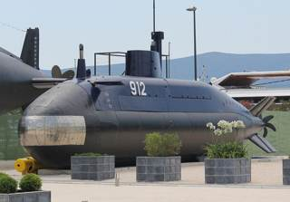
The old navy's museum, inside the marina, with a real Yugoslav submarine standing on the quay. The best thing in Tivat, and most people on the promenade walk straight past it.
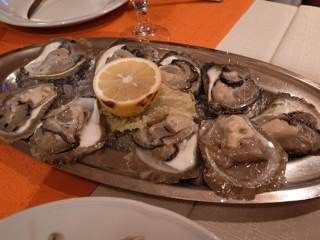
A small boat out to a shellfish farm in the inner bay, where they pull the oysters and mussels up in front of you, open or steam them, and pour a glass of local white. Two hours, private, price on request. The bay grows its own; this is the way to eat them where they grow.
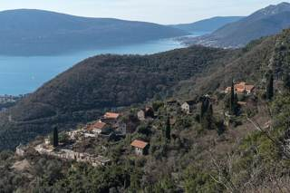
A stone village up the hill behind Tivat, half-abandoned and slowly being brought back. Fifteen minutes by car then a short walk, views straight down the bay, and usually nobody there at all.
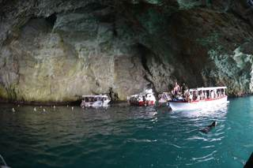
Boats run out to a sea cave that turns the water an unreasonable blue, usually stopping at the island fortress of Mamula on the way. Half a day, and much better on a calm morning than a windy afternoon.
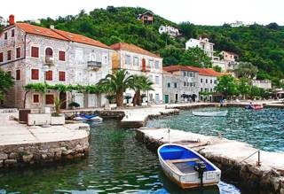
An old fishing village at the very end of the peninsula. A few houses, a few konobas, and nothing else to do — which is the point.
Twenty minutes over the hill on the Luštica side. Actual sand, which is rare here, in a bay that shelves so gently you can wade out a long way. At 18 °C this is optimism more than swimming.
A story for the first dinner. We land on the country's 21st birthday. On 21 May 2006 Montenegro voted on leaving its union with Serbia, and the EU set the bar at 55% — higher than a simple majority. The yes vote came in at 55.5%, on an 86% turnout. A country decided by half a percentage point.
What you are walking on. The marina's berths are the old navy slipways, and the submarine on the quay was built for the Yugoslav navy.

Sleep in. Swim if you are brave — the sea is about 18 °C in late May, which is colder than it looks.
The wedding, and then dancing. Nothing else is planned, deliberately. Who, where and what to wear: I will add it here as soon as the couple confirm the venue.
Not a fjord. Everyone calls this bay Europe's southernmost fjord. It isn't one — a fjord is carved by ice, and this is a river canyon that the sea flooded. The correct word is a ria, and it is why the water goes down so steeply so close to shore.
And it is still the national holiday. Independence Day is two days long, the 21st and the 22nd, so they are getting married on the country's birthday. Expect flags on the balconies and every restaurant in the bay full.

Perast is one street. About twenty palaces and nineteen churches for a village of 237 people — because in the 1700s this was a small sea power with its own merchant fleet, good enough at navigation that in 1698 Peter the Great's young noblemen were sent here to learn it. Then steam replaced sail, the money left, and the village simply stopped. Nothing modern was ever built on top of it. The street faces the islands and the late sun, until the mountains take it a little after seven.
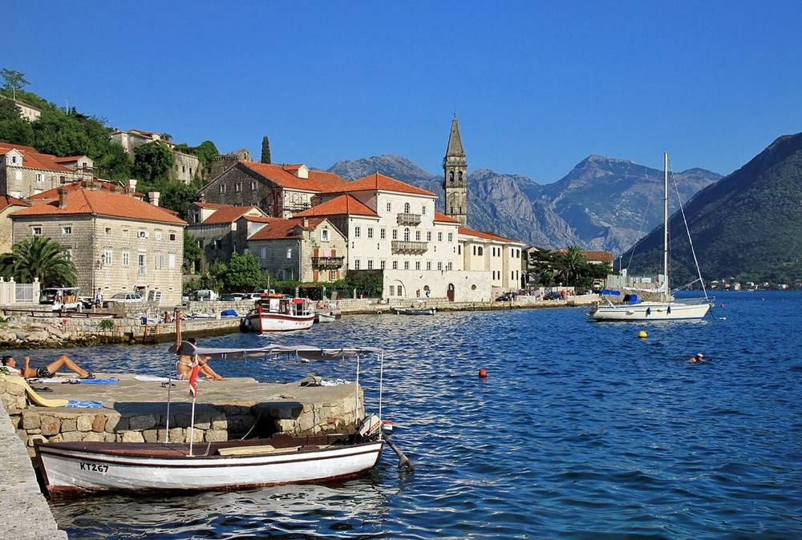
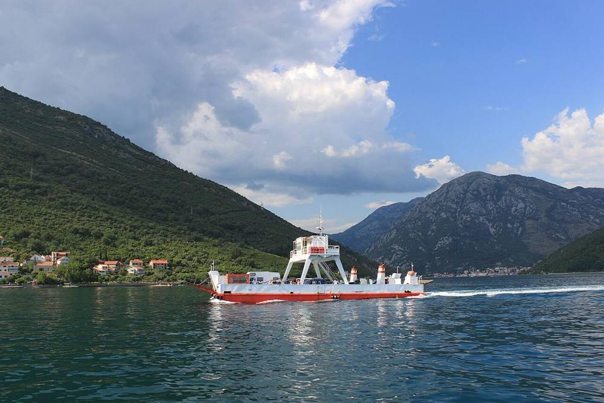
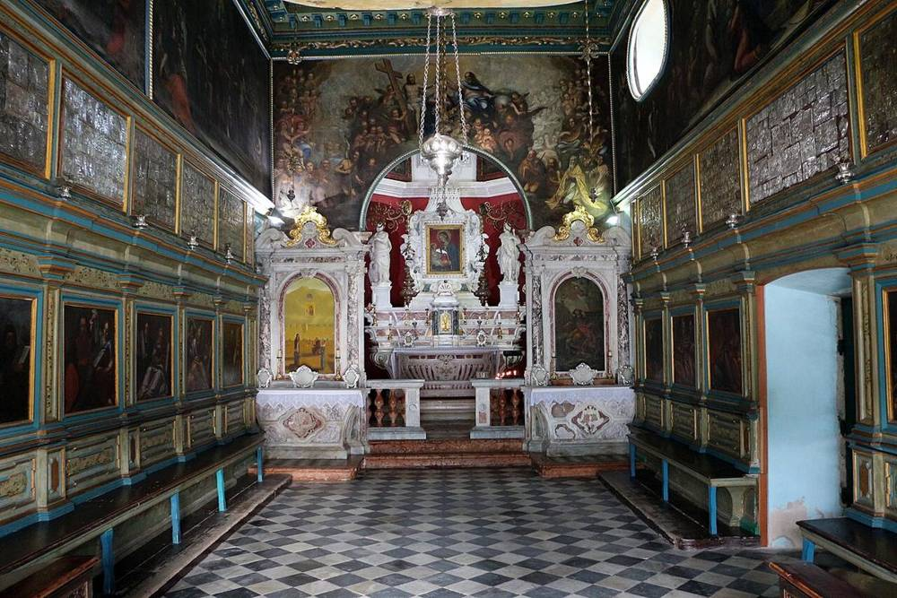
Late breakfast, then round to Perast. There are two ways, both about forty minutes: the road through Kotor, or the little Kamenari–Lepetane ferry across the Verige, the strait where the bay pinches to 340 metres. We take the ferry, because lunch is on that side. Verige means chains, and they say a chain was once stretched across the strait to keep ships out.
A birthday lunch on the way, at Konoba Ćatovića Mlini in Morinj: old watermills that ground grain and olives for more than two hundred years, with mountain streams running through the garden into the sea. It closes at nine, which is why it is lunch and not dinner.
If we want it, ten minutes in Risan, the oldest town in the bay, where a 2nd-century Roman floor shows Hypnos, the god of sleep. Open on Sundays.
The boat out to Our Lady of the Rocks, at three sharp: a cruise ship is due in Kotor that afternoon, and we want the island before its excursions do.
The Perast Museum, which is shut on Mondays, so today is the day — or the bell tower, or nothing at all.
The last of the sun. The official sunset is 20:08, but the mountains behind Morinj take the light off the waterfront at about ten past seven, so golden hour here is earlier than you would think. Choose how we spend it, below.
Birthday dinner. Instead of a cake from a shop, I will ask the restaurant for a Peraška torta, the Perast almond cake — made with Maraschino and white wine, and since 2023 a protected traditional recipe.
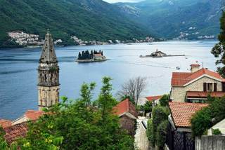
Commissioned in 1691 and never finished — the church beside it was meant to be far bigger. A small fee to climb the 55 metres to the platform, and from the top you see both islands, the whole village roofline and the mountains behind. The best view in Perast.
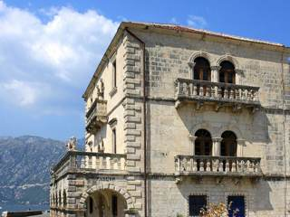
A baroque palace on the waterfront holding the town's own history: captains' portraits, navigation instruments, a painting of the Russian noblemen at their lessons, and a balcony straight over the water. €8, open until eight, closed Mondays.
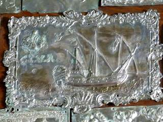
Silver plaques left by sailors who made it home, many hammered with the ship that brought them back, baroque paintings by Tripo Kokolja, and the tapestry. Ten minutes, and it is the reason to actually land rather than just circle the island.
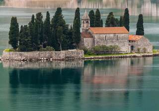
The natural one, with a 12th-century monastery and the graves of Perast's old captains under the cypresses. You cannot land, but every boat passes it. The legend: in 1813 a gunner in the French battery here fired on the village and killed the girl he loved, then stayed on the island to guard her grave.
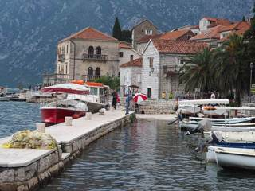
There is no beach, just ladders down from the promenade into very deep, very clear water. People who live here swim all summer. In May it is bracing and brief.
On the road just before Risan: red deer and hunters painted on a rock ledge thousands of years ago, and one panel that scholars read as a map of this bay. Badly signposted, almost never visited, ten minutes.
The island is handmade. Sailors built it, stone by stone, around a rock where an icon was found in 1452 — dropping rocks and eventually scuttling captured ships on the spot. They still do it: every 22 July the village rows out at sunset and throws more stones in. Inside the church hangs a tapestry a woman named Jacinta embroidered over twenty-five years while waiting for her sailor to come home, using gold thread and her own hair. He did not come back.
A story for the birthday dinner: "Ti con nu, nu con ti." When the Republic of Venice fell in 1797, Perast was the last place still flying its flag. On 23 August the town gathered in the church, Count Giuseppe Visković made a speech to the flag — you with us, we with you — and they buried it under the high altar rather than hand it over.
Perast puts us on the water with dinner two minutes away. Huma is fifteen minutes off, more hotel than village, with pools facing the bay. I genuinely don't mind — so you pick.
From about a quarter past six until the mountains take it. One is free and two minutes from the room; the other costs something and lasts twenty minutes longer.
Both are in Perast. One is a chef's restaurant, one is a family's.

Kotor is a triangle of stone wedged between the water and a cliff, and its walls go straight up that cliff — four and a half kilometres of them, climbing to a fortress 260 metres above the roofs. Inside there are almost no street names and no straight lines, just small squares that arrive without warning. Venice ran it for nearly four centuries and it still looks it. At eight in the morning the town still belongs to the people who live there and to the cats.
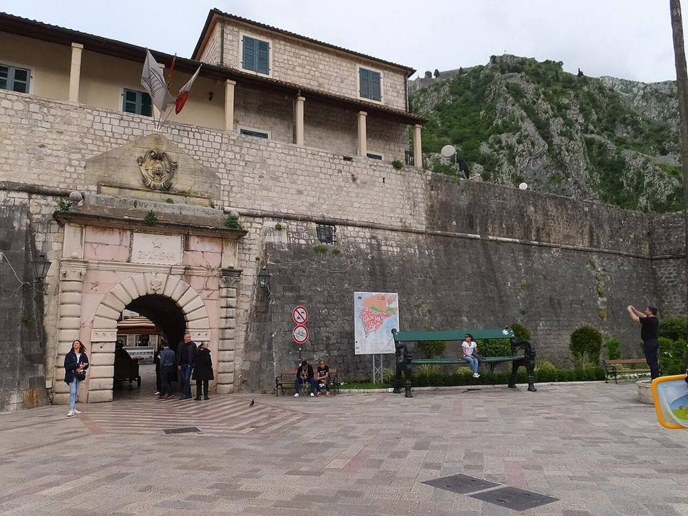
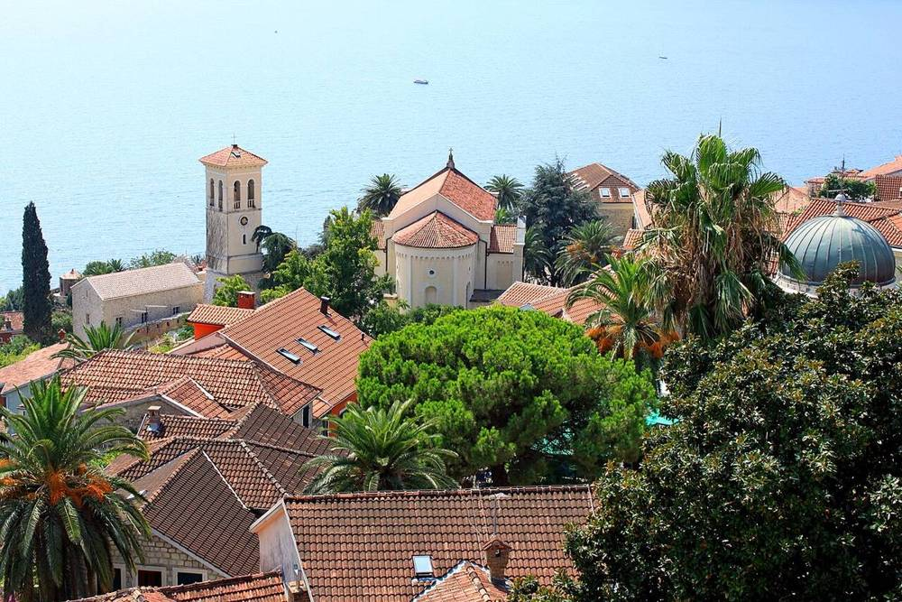
If they will run that early, a water taxi from the Perast quay to Kotor — twenty minutes across the inner bay, arriving by sea the way the captains did, while the driver brings the bags round by road.
Kotor's old town before anyone else: in through the Sea Gate, the 12th-century cathedral of St Tryphon, breakfast on a square with nobody on it. Just outside the gate the morning market is setting up — figs, mountain cheese, pršut. (If you pick Huma for the birthday night, Kotor is five minutes away and this is an easy start.)
A private driver round the bay. Coffee in Herceg Novi, where Ivo Andrić spent what he called his happiest years — his house there is a small museum, and his novel is the first book below.
The border. Monday is an ordinary working day in Montenegro — the holiday does not roll over — and a weekday morning is the gentlest slot of the week.
Into Dubrovnik. A late, light lunch, check in, lie down. We have earned a flat hour.
The city walls, in the warm part of the afternoon, on a day with no cruise ship in port. Two kilometres, one way round (anticlockwise), one to two hours, about 1,190 steps. In May they close around half past six, so we go in by half past four. And if the legs are done after the drive, we skip them: we see the walls from the sea or from above at sunset anyway.
The sunset — Dubrovnik's is at 20:11, and the walls will be shut by then. Choose where we watch it, below.
Dinner at Nautika, in the old maritime school by the Pile Gate, on a terrace facing the two floodlit fortresses. (Restaurant 360 would have been the other idea, but it is closed on Mondays.)
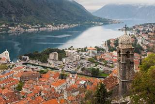
More than 1,300 steps up the cliff behind the town, about an hour and a half return, with the whole bay opening underneath you. Steep, uneven and genuinely a hike rather than a stroll — honestly, one for a morning without a border after it. Halfway up is a small church, Our Lady of Remedy, which is a perfectly respectable place to stop and turn round.
In a baroque palace on the main square. Model ships, portraits, weapons, and the record of a town that lived entirely off the sea.
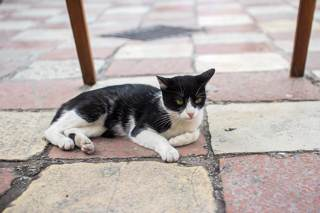
Yes, really. One room near the Sea Gate, a euro or two, and the money goes to feeding the town's strays. It takes ten minutes and you will tell people about it afterwards.
Kotor runs on cats. They are everywhere, they are fed by everyone, and there is a small museum devoted to them. The story goes that they came off the ships and were kept for the same reason ships kept them.
Saved and broken in the same year. Kotor went on UNESCO's World Heritage list in 1979 — the year an earthquake on 15 April wrecked much of it. It stayed on the list of sites in danger until 2003.
Three ways to be somewhere good at ten past eight, all finished in time for dinner.
One night only, so it matters where it is. Both are a few minutes from the walls.

Dubrovnik was the Republic of Ragusa for four and a half centuries: a city-state barely bigger than a large village, which stayed independent between the Ottomans and the Venetians by being useful to both and threatening to neither. It had consulates across the Mediterranean, a merchant fleet to rival anyone's, and a horror of being conquered that you can see in the thickness of the walls. What you walk around today is essentially a diplomatic strategy built out of stone.
And let us be honest about the time: this is half a day, not a day. The flight leaves at 17:05, so we want to be at the airport by 15:15. Two cruise ships are due at seven that morning, so the old town fills from about ten — early is ours, and then we go somewhere else.
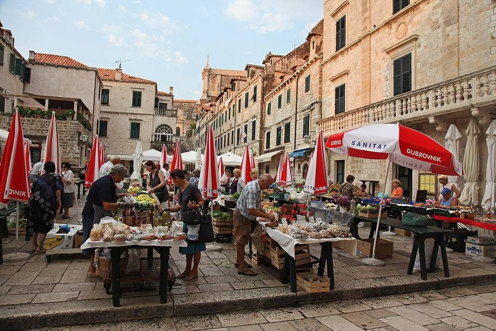
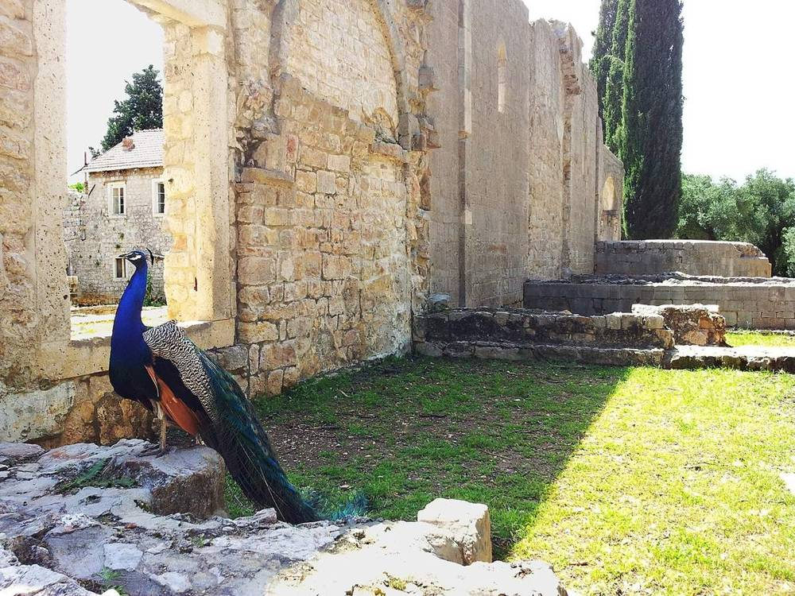
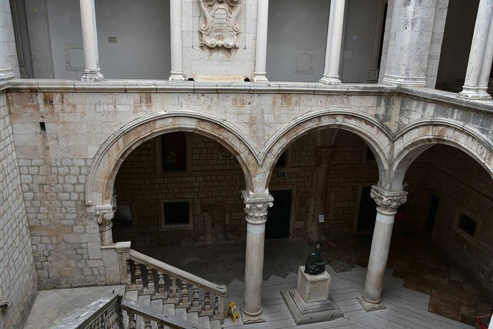
Coffee on the Stradun, which at that hour is still wet from being washed. Behind the cathedral the morning market on Gundulić Square: figs, lavender, and arancini, Dubrovnik's candied orange peel, to take home.
One thing, chosen below. Not two.
A long farewell lunch, chosen below too.
To the airport, about half an hour from the old town. 17:05 to Munich, into Amsterdam at 21:55.
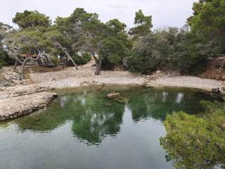
Fifteen minutes by boat from the old harbour. Botanical gardens planted by a Habsburg archduke, his peacocks still running loose, a small salt lake called the Dead Sea, and a ruined Benedictine monastery. Richard the Lionheart is supposed to have been shipwrecked here in 1192, coming home from the Crusade.
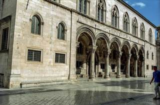
Where the republic's elected rector lived during his term — which lasted exactly one month, deliberately, so that nobody could turn into a prince. Inside are the original bronze bell-strikers from the clock tower, and the bust of Miho Pracat, a shipowner and the only commoner the republic ever gave a statue.
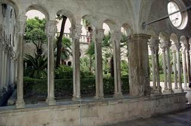
The pharmacy opened in 1317 and has never closed since — one of the oldest working ones in Europe. The cloister beside it is the calmest place inside the walls, thirty seconds off the Stradun.
The other cloister, at the other end of town, begun in 1228 and built into the walls — a Gothic cloister and the best collection of the old Dubrovnik painters. Far fewer people than the Franciscans.
One of the oldest synagogues in Europe still in use, documented from the early 1400s, up a narrow lane off the Stradun that had a gate locked every night. Small, and up a flight of stairs.
A serious photojournalism gallery with a permanent floor on the wars in the former Yugoslavia, including the shelling of this city in 1991. Not a light hour, but the right one if you want to understand what you are looking at.
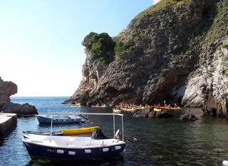
About three hours, paddling under the walls and across to Lokrum, usually with a swim stop. The one way to see the city from the angle its enemies did.
A republic that ran on paperwork. Ragusa set up one of the first formal quarantines in Europe in 1377: thirty days on an island before you were allowed in, later forty, which is where the word comes from. It banned the slave trade in 1416. Its merchant ships were so well known in England that "a Ragusan" became the English word argosy — Shakespeare's merchant of Venice has his money in them. Above the gate of Fort Lovrijenac is still carved: freedom is not to be sold for all the gold in the world.
Measure yourself against a knight. The stone knight on Orlando's Column, by the clock tower, was also the republic's ruler — in the measuring sense. His forearm, 51.2 cm, was the official length every cloth merchant had to use. The two bronze men who strike the bell above him are called Maro and Baro.
From nine until lunch. One of these.
Nautika only opens in the evening — which is why it is Monday's dinner. For lunch, one of these.
Not a to-do list. Just the four that are worth stopping at, in the order we meet them.


What to order on each side of the border, and four words that work in both. The two languages are close enough that a thank-you in one is a thank-you in the other.
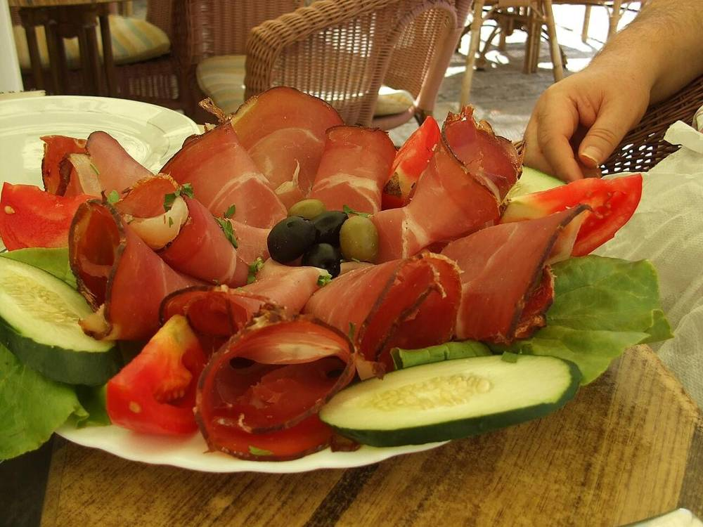
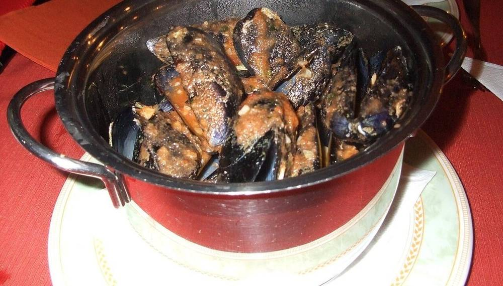
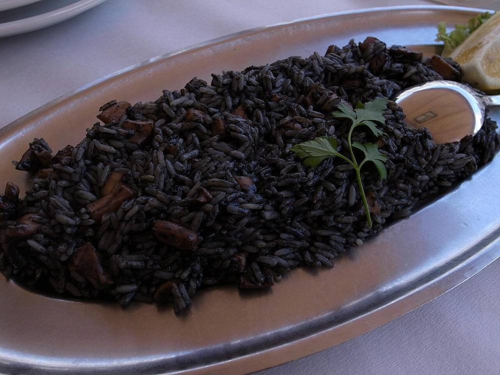
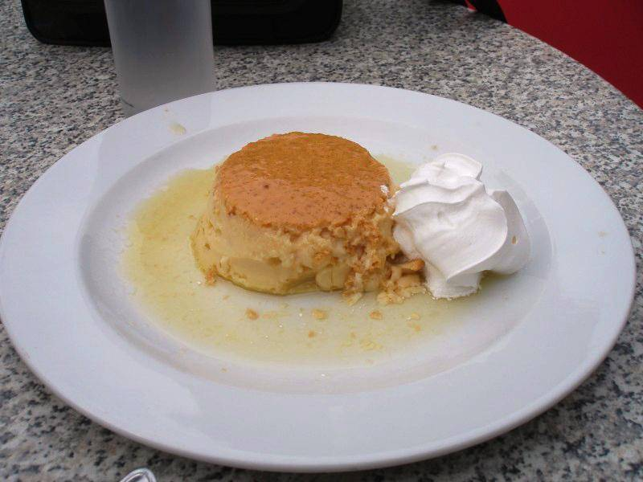
Peraška torta — the Perast almond cake, with Maraschino and white wine. Our birthday cake.
Oysters from the inner bay, raw with lemon.
Vranac — the red you will see everywhere, Montenegro's own grape. Krstač — the old native white.
Kratošija — ask for it by name. By DNA it is the same grape as California's Zinfandel and Italy's Primitivo, and researchers think it may have started here. Vranac is its child.
Ston oysters — flat oysters from Mali Ston bay, an hour north, with EU-protected status since 2020.
Šporki makaruli — "dirty macaroni", pasta with a slow meat ragù. A Dubrovnik classic.
Arancini (candied orange peel) and kotonjata, a firm quince paste — goiabada, but made with quince.
Malvasija Dubrovačka — the city's own white grape, grown in the Konavle valley by the airport. Plavac Mali from Dingač — a big red from Croatia's first protected wine region, 1961.
Hvala — thank you.
Dobar dan — good day.
Molim — please, and you're welcome.
Živjeli! — cheers. For the wedding, and for the cake.

The old road out of Kotor climbs twenty-five numbered hairpin bends to Njeguši — a village known for smoked ham and mountain cheese, and as the birthplace of Njegoš — and then into Lovćen National Park. At 1,657 m, at the top of 461 steps, is his mausoleum: granite caryatids, a vast view over the bay on one side and the mountains on the other. He was a prince-bishop, a poet, and by all accounts about 1.9 m tall.
Down the far side is Cetinje, the old royal capital — a town of about twelve thousand people that once had the embassies of Russia, Britain, France and Austria-Hungary on one street. The buildings are still there.
This needs a whole day, and at four nights we do not have one to give. It is the reason to come back.
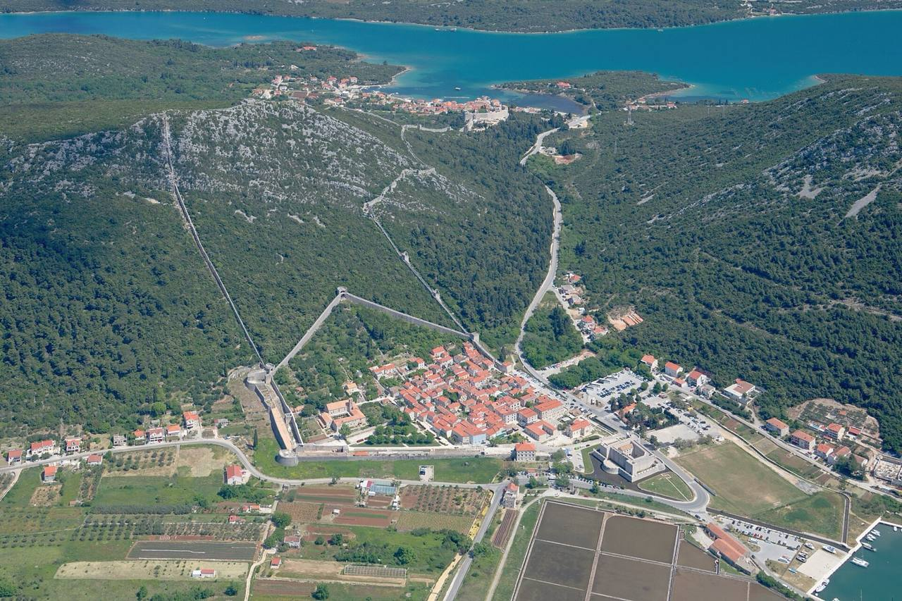
An hour north of Dubrovnik, five kilometres of medieval wall built to guard the salt pans that paid for the republic, and oysters pulled out of Mali Ston bay, farmed there since Roman times. A half-day trip, about five hours — so it needs a free day too.
Durmitor and the Tara canyon, Lake Skadar, and the monastery at Ostrog built into a cliff face. All extraordinary, all several days away from what we have. Another trip.
Tap the options you like anywhere on this page and they collect here. When you have been through them, press send — nothing reaches me until you do.
How this works. Your picks are kept in your own browser on your own phone — nothing is sent anywhere until you press send, and nobody else can see them. There is no account and nothing to log in to.
A Brazilian passport needs no visa for a short stay in either country. For Europe's Schengen area it has to be less than ten years old when you arrive, and still valid three months after you finally fly back to Brazil — so it is worth checking the date now, not in April.
You are registered in the EU's new EES system — passport, fingerprints and a photo — when you first land at Schiphol from Brazil; at the Croatian border on the Monday they just check you against it. The days in Montenegro do not count towards your 90 days in Schengen.
ETIAS, the €20 online permit, was still not running in October 2026. If it starts before May, you would need it for the whole European part of your trip, the Netherlands included. I will check the official site in January and tell you. And make sure your travel insurance covers Montenegro, which is not in the EU.
Montenegro is not part of Europe's free roaming yet, and a Brazilian SIM would be expensive anywhere here. The simplest answer is Crnogorski Telekom's tourist eSIM: €15 for 15 days, bought online, and its data also works in Croatia, so one purchase covers the whole trip. Your phone has to support eSIM; keep the Brazilian line in for WhatsApp.
The emergency number in both countries is 112.
Both countries use the euro, which makes this simpler than it has any right to be. Cards work nearly everywhere — bring one for the walls. The Buža bars and the Cats Museum want cash. Carry €20 in notes and coins.
One trick: for the walls, the one-day Dubrovnik Pass cost the same as a walls ticket in 2026 (€40), and it runs for 24 hours from when we first use it — so Monday afternoon's walls also get us into the Rector's Palace on Tuesday morning.
Around 23 °C in the day, 15 °C at night, sea about 18–19 °C. Green, not yet hot, and showers are possible — a little more often inside the bay, where the mountains catch the cloud.
Sunday becomes the long lunch, the island church and the Perast Museum, all of them indoors. In Dubrovnik the Lokrum boat does not sail in bad weather, so Tuesday becomes the Rector's Palace and the two cloisters, and Monday's sunset moves to a window seat.
Shoes with grip above everything else — polished limestone is genuinely slippery, and the walls alone are 1,190 steps. A light jacket for evenings on the water. A hat: there is no shade up on the walls. Swimsuit, in case you are brave. The wedding outfit. Not a rolling suitcase if we sleep inside Dubrovnik's walls — the old town is stepped and car-free.
| Nights | Where | Status |
|---|---|---|
| Fri 21 + Sat 22 | The wedding coast | The bride's guests — thank you |
| Sun 23 | Perast, or Huma at Dobrota | Your choice above. Booked first: it is the scarcest night of the trip |
| Mon 24 | Dubrovnik — inside the walls, or Ploče | Your choice above. One night only |
For the armchair in Belo Horizonte. The first book is the reason we stop in Herceg Novi.
Four centuries of one Bosnian town, told entirely through the stone bridge at its centre. It is set inland, not on this coast, but it is the book Andrić is loved for, and he won the Nobel Prize in 1961. It is in Portuguese: Ponte sobre o Drina, Grua Livros, 2020, translated straight from Serbian. We pass his house on the Monday.
The great travel book about this part of the world, written on the edge of the war that ended it. In English, or in Spanish as Cordero negro y halcón gris. It is enormous — read the Dalmatia and Montenegro chapters and leave the rest.
Dubrovnik played King's Landing. Fort Lovrijenac was the Red Keep, Gradac Park hosted the poisoned wedding, and the Jesuit staircase is where the queen does her walk of shame. Any episode will do; you will recognise the walls.
In March 2016 a spaceship landed in the middle of the Stradun: the old town became the casino city of Canto Bight. We will drink our coffee on the landing pad.
Bond goes to Montenegro to play poker — and none of it was filmed there. The "Montenegro" is Karlovy Vary, in the Czech Republic. Watch it, then come and see the real one.